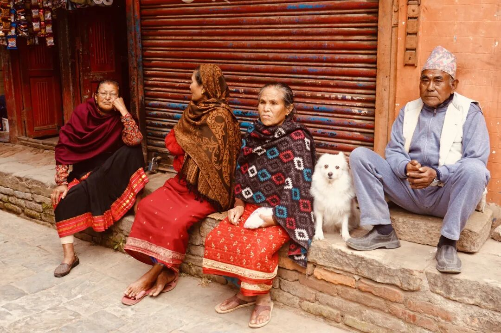
死亡在每一个人的脑后等着，灵魂、骨头、思想，所有的有一切，人所依赖和相信的一切，贪恋和执迷的一切，都会被吞噬殆尽。
没有什么能为你留下来，留下来的一切只与活着的人相关。死亡不可怕，人们害怕的是等待死亡的时间。
来到尼泊尔，我最想看的就是烧尸庙（Pashupatinath temple）。我从未亲眼见过活人如何成为一具躯壳，身体如何被烧成灰烬。
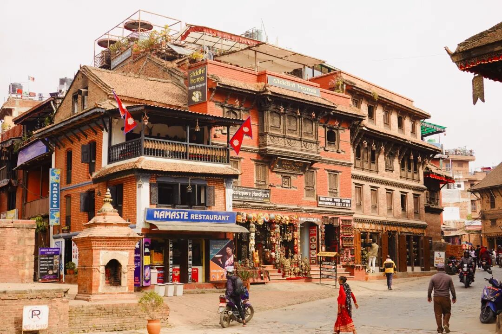
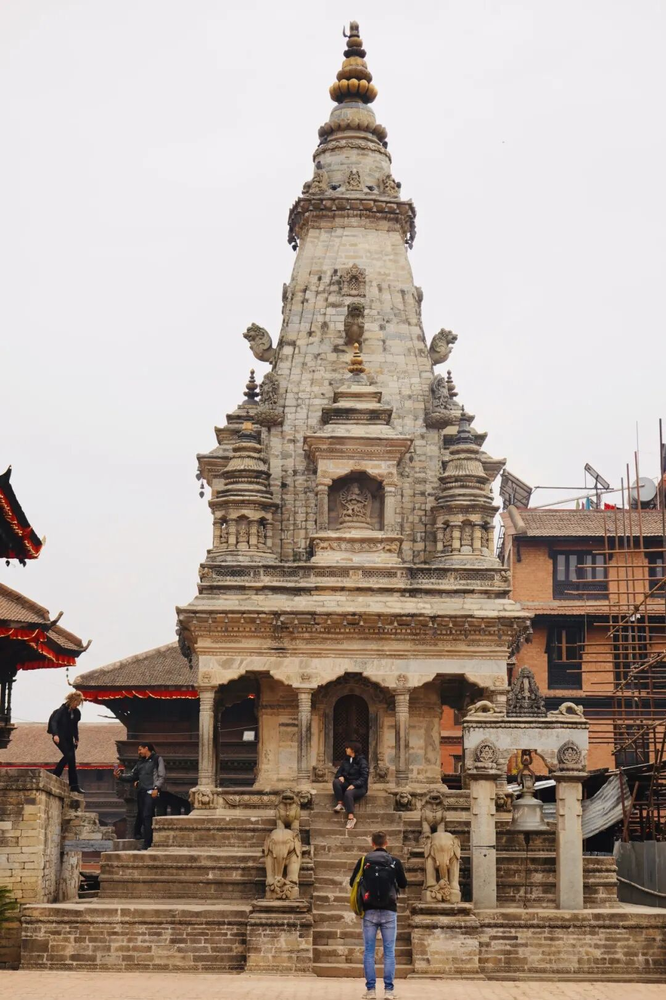
佛教有一种禅修方法，叫不净观。通过观想人的身体，以及人死后尸体腐烂毁灭的过程，除去贪欲，明白“一切是空”，凡有所相，皆是虚妄，如梦幻泡影，如露亦如电。
我和X, Will, Y, Jack, Mia 六人来到烧尸庙。来之前，我们问出租车司机，烧尸庙什么时候开始烧尸体？司机说，任何时候。
任何时候，都有尸体在燃烧，因为整个加德满都的死人都在这里被烧掉，相当于一个火葬场。
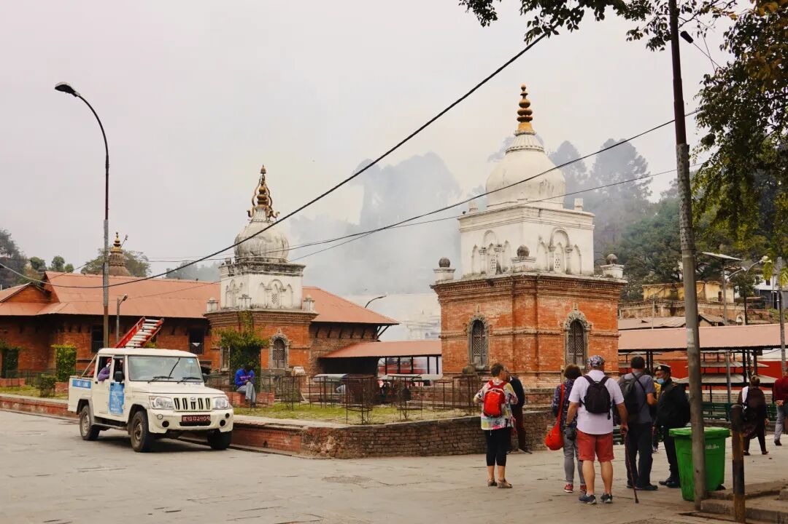
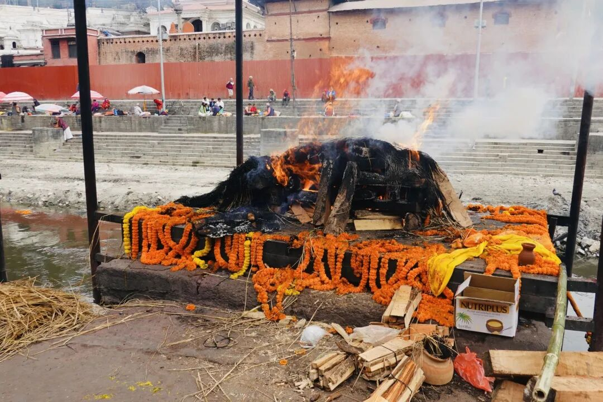
“每天有那么多人死吗？”Will嘀咕道。
活着的人有一种幻觉，觉得生是无边无尽的，死神只降临在电视、报纸，遥远的世界角落里。
到达烧尸庙，我们买票进门。这里俨然成了旅游胜地，通往尸体燃烧处的小路两边都是小摊贩。他们卖一串串黄色的金盏花、白色的菊花，这种花用来覆盖尸体，装扮烧尸台。
烧尸庙沿着一条河修建，中间有几座桥把两岸连接起来。桥的一边是一排算命先生，他们坐在地上，为当地人看手相、赐福，有时候驱魔。
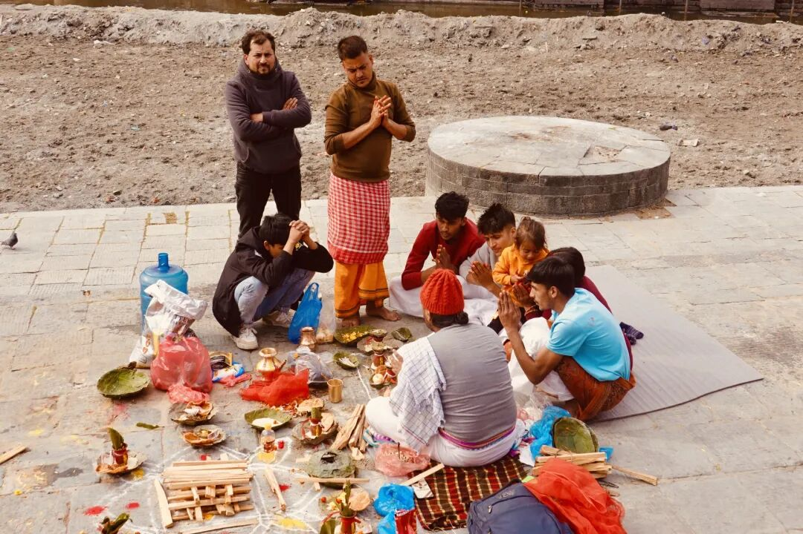
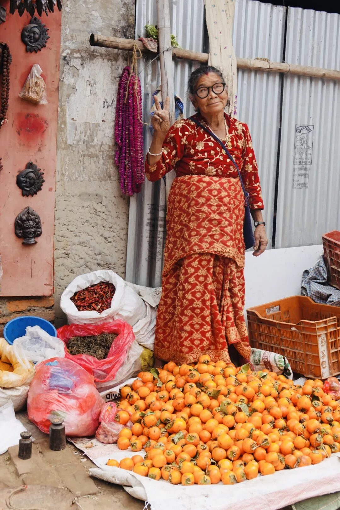
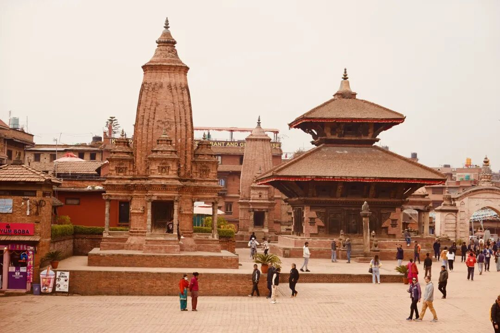
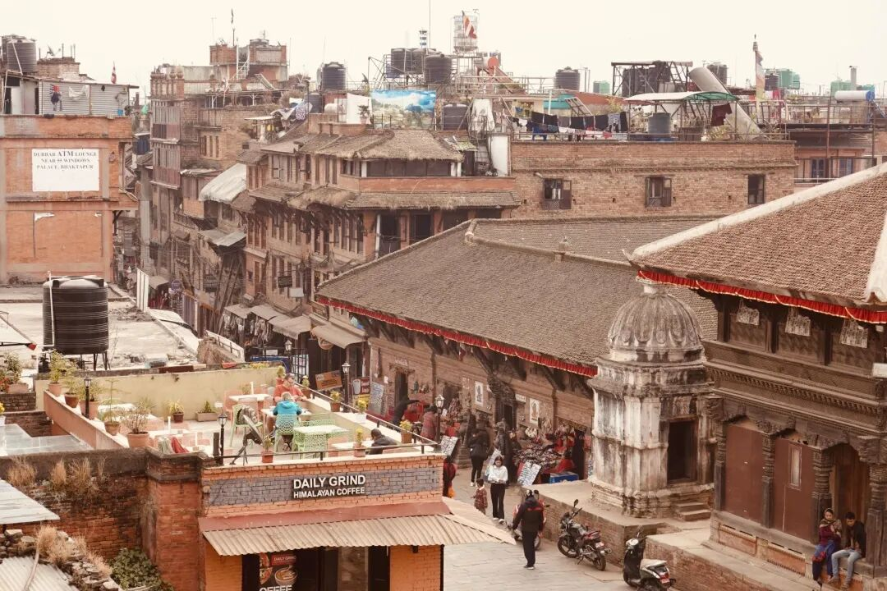
河边和天空中都有成群的鸽子。尸体烧完后，会在烧尸台上撒米粒，让鸽子来吃。也许类似于西藏的天葬，希望尸体的灰烬，能被鸽子带到天上。天离神最近。
我们走过桥，桥上站着满满的人，几乎都是当地人。一些女人们穿着类似印度纱丽一样的红黄绿色裙子，额头点了红色的颜料。两眉毛中间的红点代表已婚。印度教的规矩，只规范女人，不规范男人。女人已婚和未婚用红点来区分，男人却没有任何印记。
桥两边有很多台阶，上面坐满了人，没有悲伤的表情，只是木然地坐在那里，仿佛眼前看到的只是一条河、一棵树，并不是葬礼和尸体。我以为到处是哭声，却只有两个孩子和一个僧侣在哭。
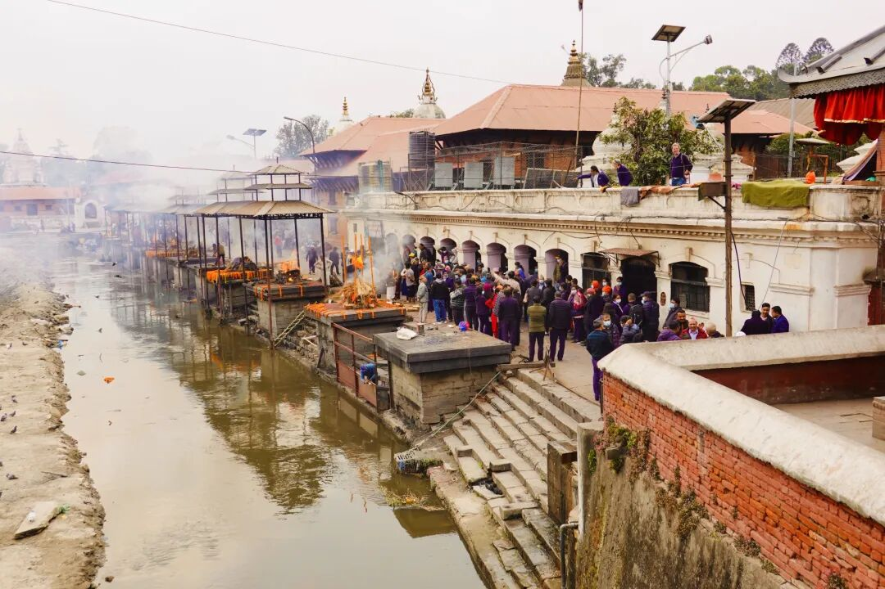
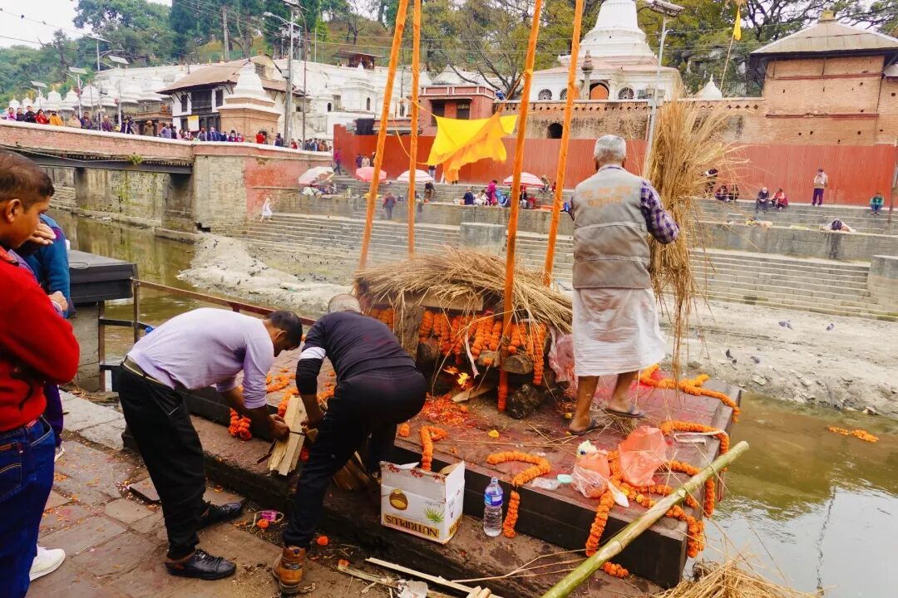
我们到了河对面，沿河边建了十几个方方正正的烧尸台，走廊右边是几层台阶，坐满了面无表情的人。台阶背后是一些庙宇，用来祈福、存放骨灰、点油灯。
烟雾缭绕，盘旋上升，一种烧焦的气味，我们戴上了口罩。每个台面上都有尸体在烧，我们一个一个看过去。
第一个烧尸台旁边陈列着一具尸体，尸体被黄布裹住，全身赤裸。人死后身体会收缩，所以尸体看起来只有1米4，瘦小的像一只鸽子。是个男人，他的头露在外面，黄布上撒了一些花瓣。他的皮肤就像一张裹住骨头的皮革，没有水分。有点像周黑鸭那种卤制的鸡爪，皮包骨头。他眼窝深陷，像两个坑洞。
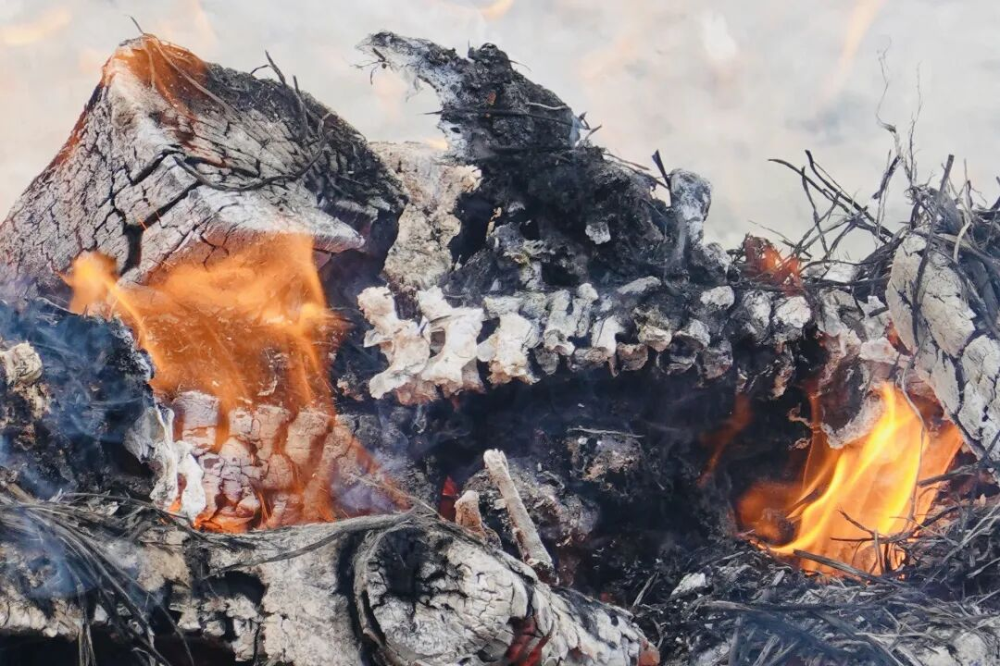
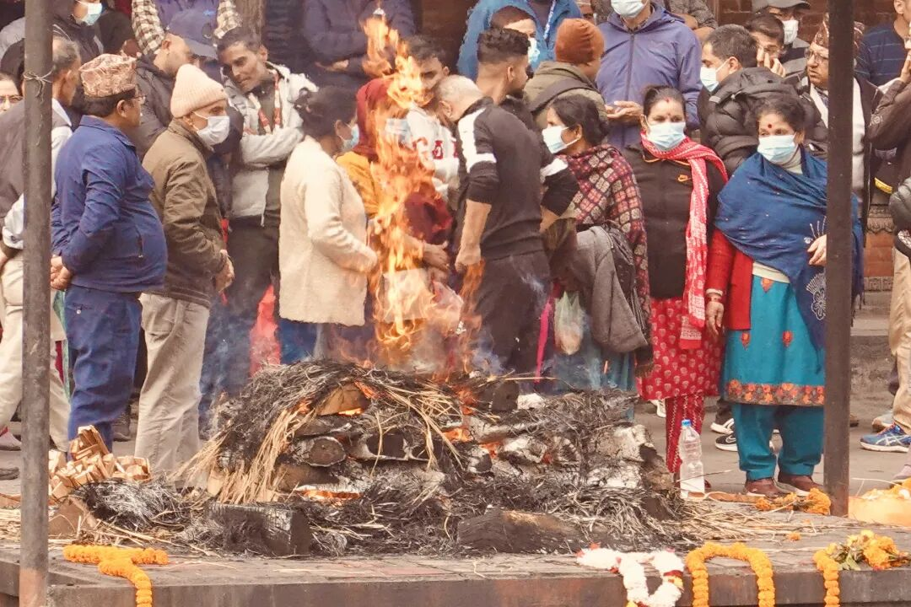
几个人正在往烧尸台上摆放木头，把木头叠落成一个长方形，再往上加第二层，然后把尸体摆在木头中间，再往尸体上加一层木头，总共有四五层。然后点燃，火很快就烧了起来。
沿着烧尸台走，可以看到不同的燃烧阶段。另一个烧尸台上已经大火冲天，浓烟滚滚，尸体已经被烧掉一半，还有一只脚和一些小腿没有烧黑，裸露在外面。一个男人拿起长长的竹竿，在火中翻尸体，把没烧掉的脚和小腿推进火里。把烧的只剩肋骨、脊柱、和头骨的上半身翻搅一遍。
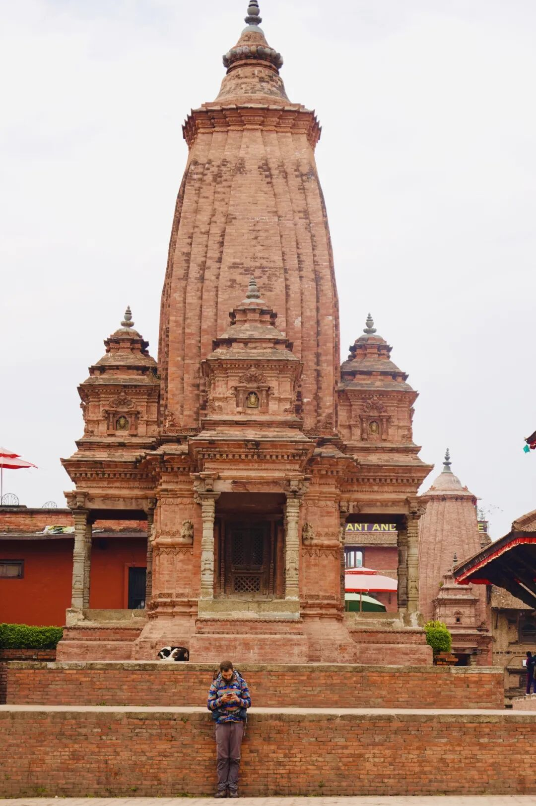
再往前，烧尸台上烧的是一具女尸，肉体全部烧干净了，只剩下内脏是黑黑的一团。烧尸人用竹竿把内脏翻出来，再往火的中心放，让它燃烧殆尽。
再往前，是烧完的尸体。烧尸台上只剩一堆木头灰烬，还有人骨，家人来把骨头捡走敲碎。烧尸人在灰烬周围撒上白米，让鸽子来吃。然后用几桶水，把灰烬冲进河里。
冲洗干净的烧尸台，等着下一具尸体。
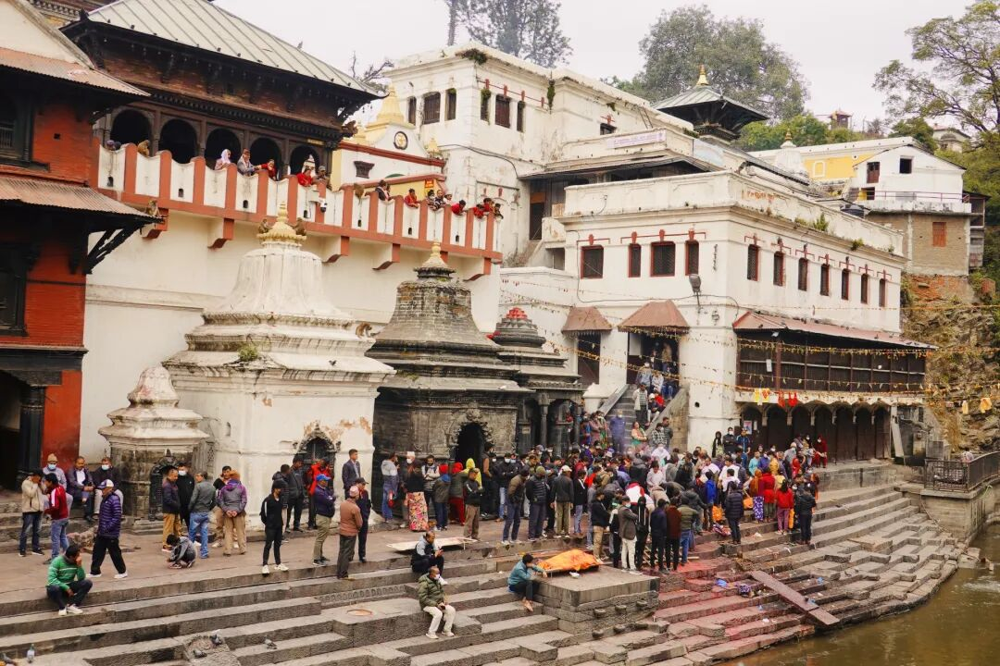
我们去河的另一边，看到人们正在河上游清洗尸体。尸体洗干净后，全身裸着，裹紧黄色缎子里。几个男人用钢制的担架抬着，举过肩膀，亲人在前面哭丧，后面的浩浩荡荡跟着几十个人。边走边在沿途洒一些花瓣。
Jack和Mia看到孩子在哭，不忍心再看下去，提前离开了烧尸庙。Y，X和我都很平静。Will以为烧尸庙只是一个庙宇，他没有料到现场有死人，看到第一具尸体躺在路中央，Will被吓了一跳，抖了一下，躲到我后面去了。
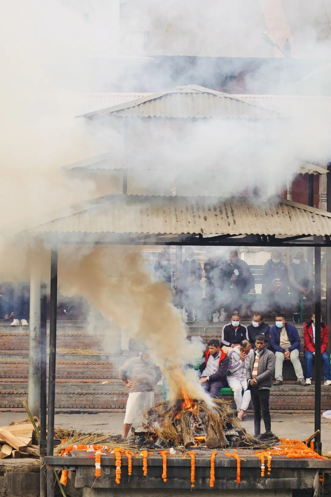
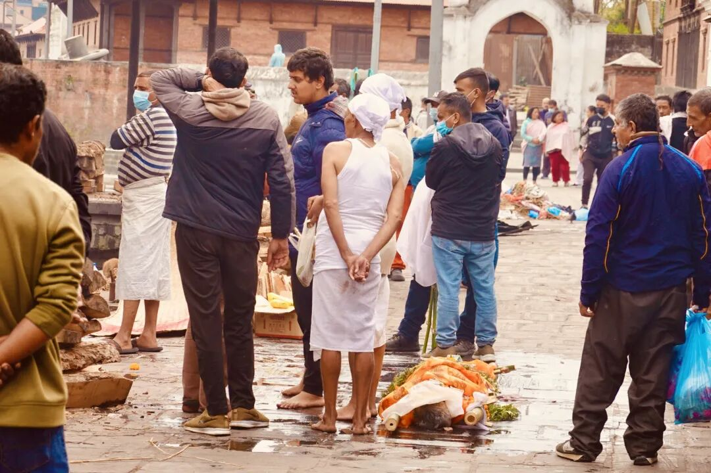
离开烧尸庙，我们来到附近的一个公园。那里正在举行湿婆神赐福仪式，我和Jack参加了仪式。赐福的人在我们的额头点了红点，鼻梁上点了黑点，又给我们手心放了一点牛奶和糖，让我们吃掉。最后戴了花环在我头上。
Y不参加，他说他有自己的神，不想随便接受其他神的赐福。
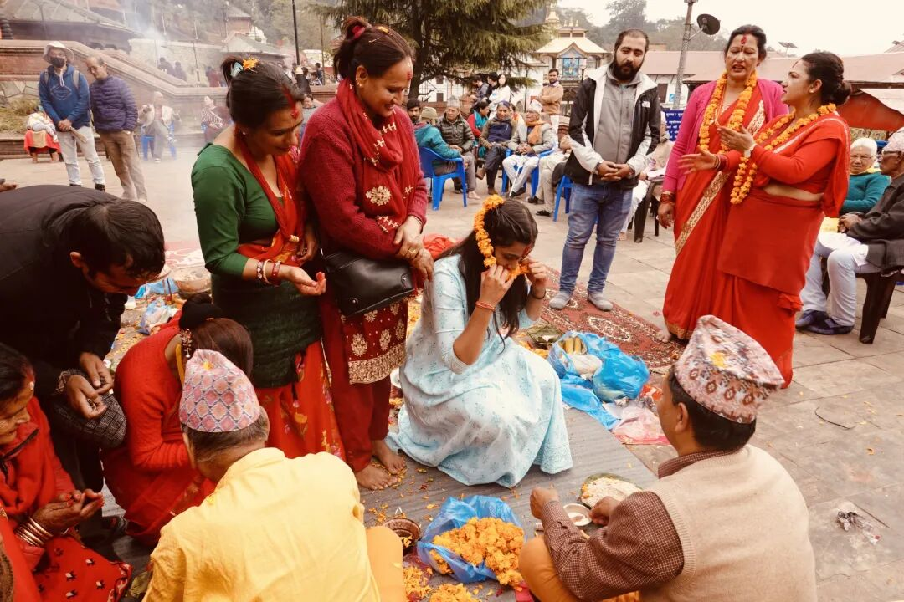
赐福结束后，我们去了尼泊尔最大的佛塔Buddha Stupa。佛塔很大，白色的半球形底座，金色的塔尖，塔上画着一双大眼睛。那是佛陀沉思时的眼睛，能看透世间。
我们绕着佛塔走一圈，转动经筒，点燃祈福油灯，敲响铜钟。一些僧人坐在地上读经文，还有很多西藏的僧侣来朝拜。佛塔四周有很多人在五体投地拜佛塔。他们手上套着木板，双手合十，再双手双脚伏地，整个人趴在地上。
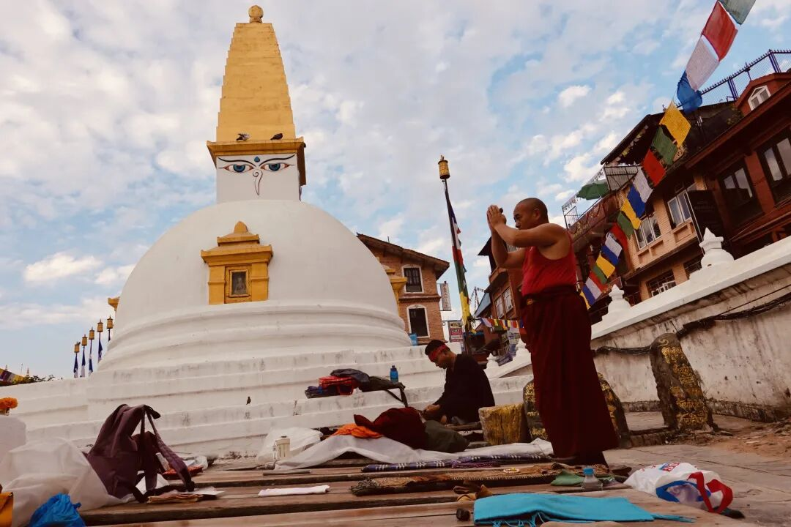
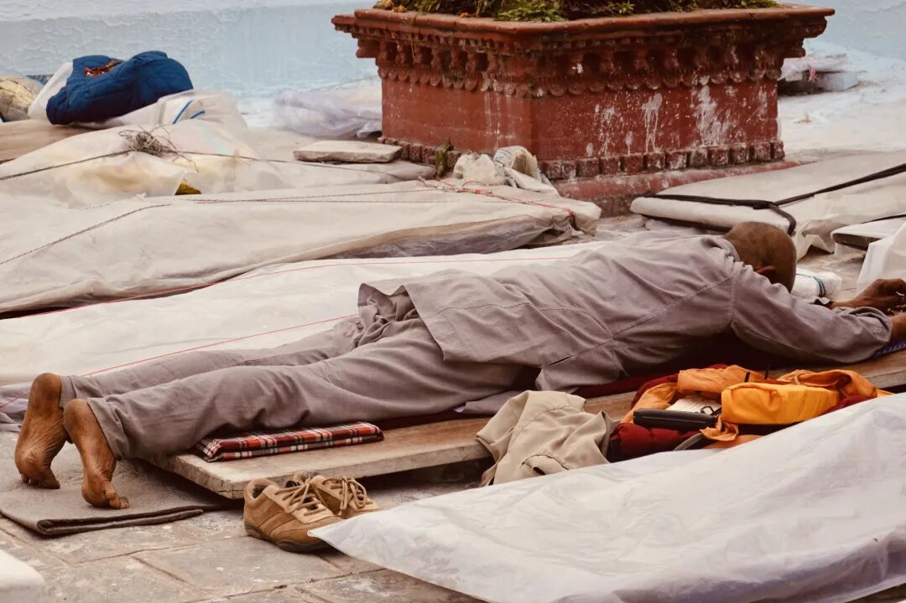
这种五体投地是最虔诚的拜佛方式，可以连续拜36次，也可以一天拜3000次。这些人每个人趴在一个木板上拜佛，他们好像长期住在这块木板上一样，木板一角放着枕头被褥。也许他们在这里拜一个月，甚至更长时间。
离开佛寺，我们回去休息，晚上10点去世界排名49的迪厅蹦迪，这也是加德满都最大的迪厅。
迪厅四方形，舞台下沉，四周是层层阶梯，每个阶梯上都有卡座，我们包了一个卡座，观看舞池里跳舞的人。
DJ非常厉害，一下子把气氛调动起来，昏暗中霓虹灯闪烁，在音乐的最高潮处，舞台四周喷出几簇彩色烟雾。人们群魔乱舞，肆意释放激情。
“只有在夜深，你和我才能，敞开灵魂，去释放天真。”
我们6人上一次去迪厅都不知道是何年何月了，每个人都很兴奋。于是喝了几杯Shot，一些啤酒。微醺时，我们步入舞池，刚开始还有些害羞，扭扭捏捏，与周围的人格格不入。
整个舞池里都是年轻男女，本地人居多，游客很少。大家随着音乐扬起手臂，身体扭成一团。每个人脸上都是开心到疯狂的表情。
我们被感染，慢慢进入了状态。双脚离地，随着音乐跳动摇摆。周围的人也与我们互动，陌生人之间很快围成一群、勾肩搭背一起跳舞转圈。卸下所有防备，放下所有人设后，来到极乐世界。大笑、大叫、疯成一团。
跳累了，我们到卡座休息，看着这满池子的热血青年，感受到人生的迷幻，到头来都是一场空，不如及时行乐。
无论生前多么功成名就、光鲜亮丽，到头来都是一具尸体，一副死样。有人渴望名流千古，可是名流千古有什么意义？人只有在活着的时候才是活着，即使流芳百世，也是死了。后人的崇敬与自己的生命毫不相干，死人的灵魂、思想和记忆在他自己的生命里再也泛不起波澜。
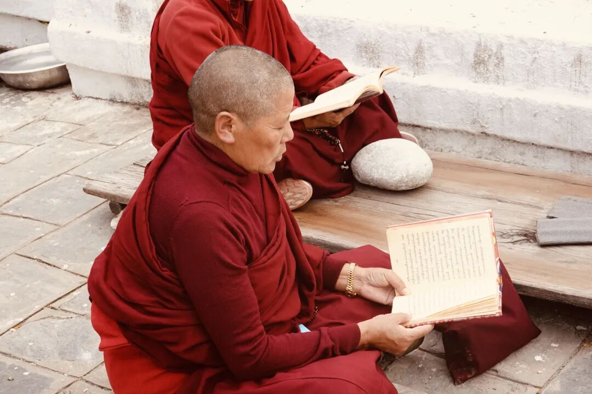
世上多一个人少一个人，多一份成绩少一分成绩，都一样转。没有人能决定历史，只是历史选择了人。
“世人都晓神仙好，惟有功名忘不了。古今将相在何方？荒冢一堆草没了。世人都晓神仙好，只有金银忘不了。终朝只恨聚无多，及到多时眼闭了。”
如果活着的时候不能去做热爱之事，指望着死后被挂在墙上供起来，那就是拿鲜活的生命、有限的时间，去换虚名。
“人生到处知何似，应似飞鸿踏雪泥。泥上偶然留指爪，鸿飞那复计东西。”
肆意妄为，对酒当歌，人生大乐。
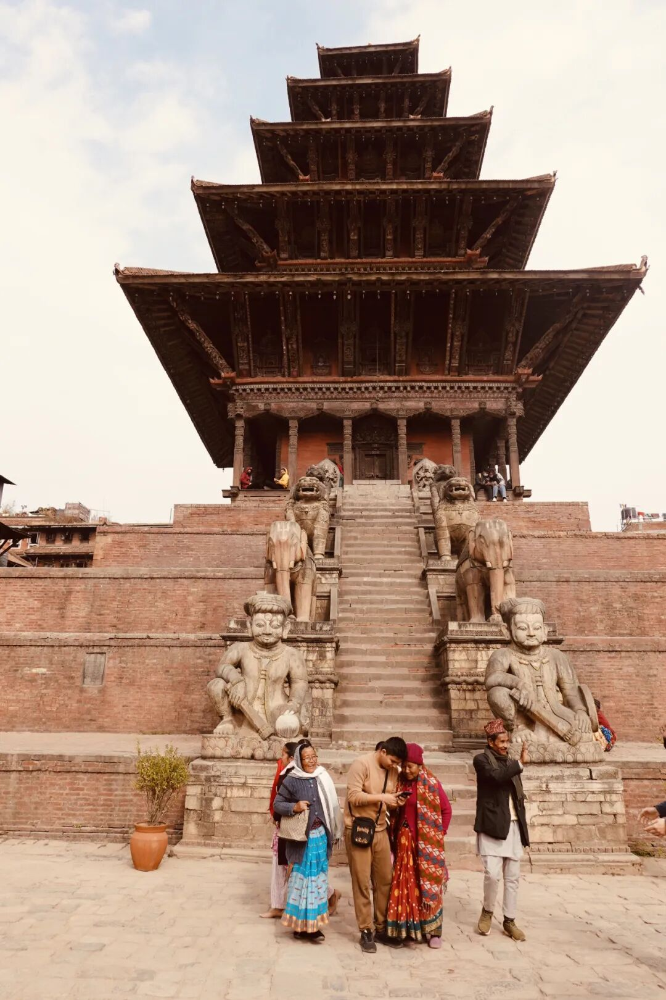
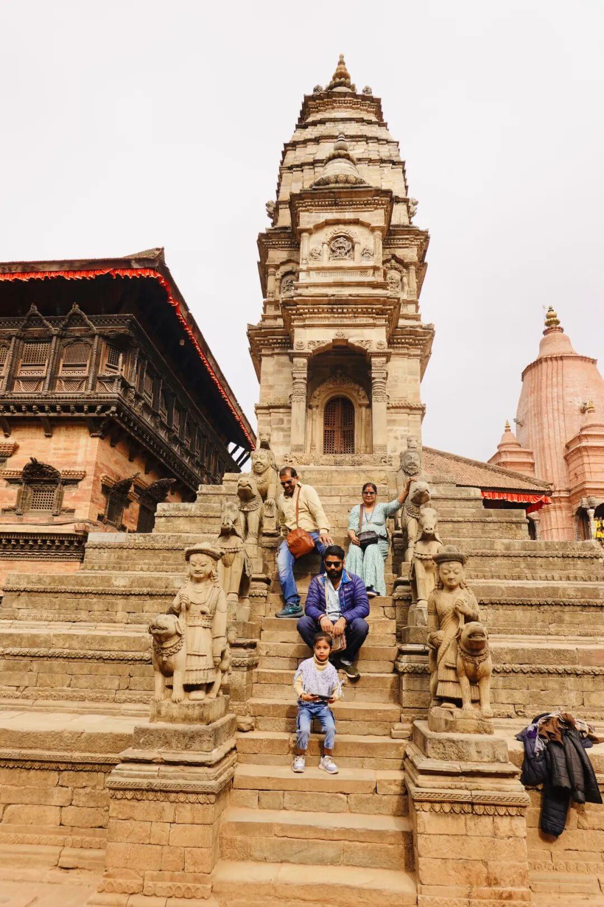
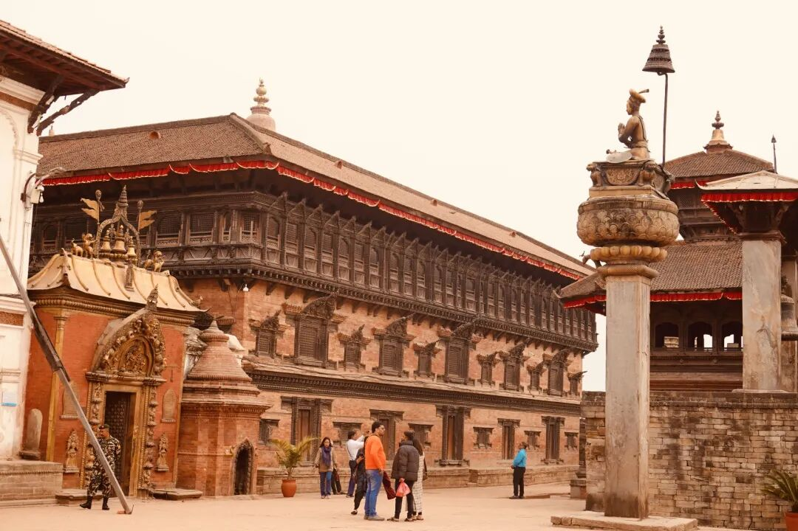